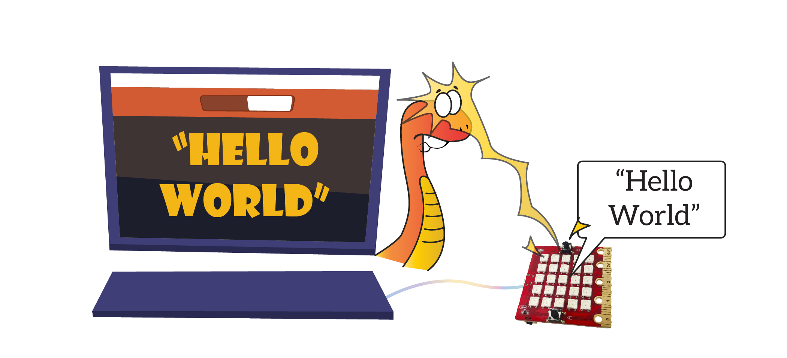
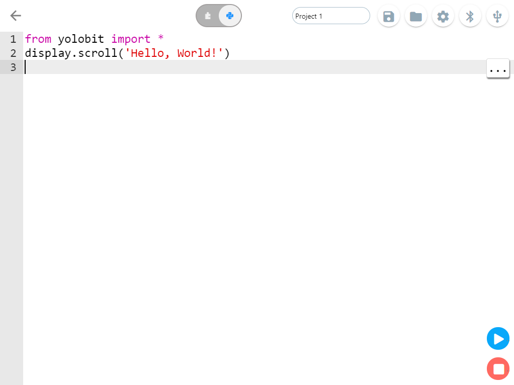

Xin chào thế giới
Trong hầu hết các tài liệu hướng dẫn lập trình một ngôn ngữ, thì bài học đầu tiên phần lớn sẽ là viết một chương trình cho máy tính hiện ra dòng chữ Hello World (xin chào thế giới). Chúng ta cũng sẽ làm tương tự nhé.
{kind=link}
Để làm được điều đó thì thật là dễ với MicroPython với các dòng lệnh sau:
from yolobit import *
display.scroll(‘Hello World’)
Chúng ta tìm hiểu từng dòng lệnh một nhé. Dòng đầu tiên là:
from yolobit import *
Dòng lệnh này bảo MicroPython rằng hãy sử dụng tất cả mọi thứ cần thiết để làm việc với Yolo:Bit. Tất cả các thứ cần thiết này được chứa trong một thành phần đã được tạo sẵn tên là yolobit (trong lập trình người ta gọi các thành phần như vậy là thư viện, giống như thư viện là nơi bạn hay đọc sách nhé).
Khi bạn dùng lệnh import nghĩa là bạn muốn sử dụng, còn dấu * nghĩa là bạn muốn sử dụng toàn bộ những gì có trong thư viện đó.
Còn dòng thứ 2 như sau:
display.scroll(‘Hello World’)
Dòng lệnh này yêu cầu MicroPython thực hiện hành động scroll của đối tượng display để hiện ra dòng chữ Hello World. Đối tượng display này là một đối tượng có trong thư viện yolobit được dùng để làm việc với màn hình LED của Yolo:Bit. Ngoài scroll ra thì đối tượng display này còn có nhiều hành động khác nữa mà chúng ta sẽ tìm hiểu sau. Các hành động này trong lập trình còn được gọi là các hàm.
Khi chúng ta gọi các hàm này, chúng ta có thể truyền vào thông tin để các hàm này chạy theo ý muốn. Ví dụng trong câu lệnh trên, để hiện ra dòng chữ Hello World thì ta truyền dòng chữ này trong câu lệnh và bọc trong ngoặc tròn và dấu nháy kép (“ “).
Một số hàm nếu không cần truyền thêm thông tin vào thì có thể gọi và bọc trong 2 dấu ngoặc tròn mà không có dấu nháy kép ( ).
Bạn hãy copy 2 dòng lệnh trên vào giao diện lập trình Python của Yolo:Bit, kết nối Yolo:Bit và nhấn nút Chạy để chạy thử chương trình.
{kind=link}
Nếu thành công bạn sẽ thấy màn hình LED của Yolo:Bit hiện ra dòng chữ Hello World nhé. Thật đơn giản phải không?
Như vậy bạn đã biết cách viết và chạy một chương trình MicroPython đơn giản và học được một số khái niệm cơ bản. Chúng ta cùng tìm hiểu thêm những thứ hấp dẫn hơn nữa ở phần sau nào.